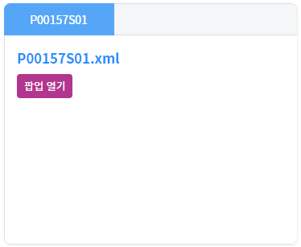
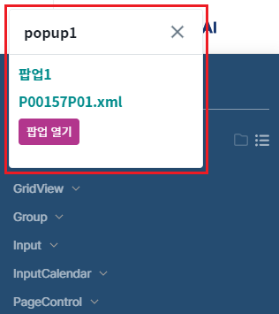
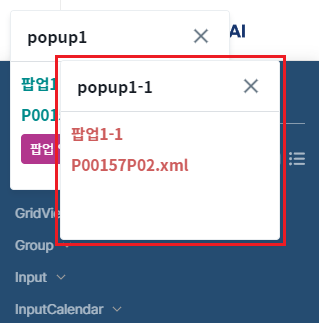
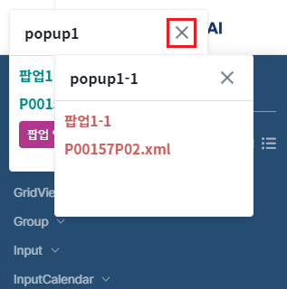
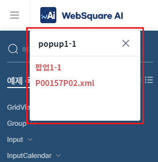
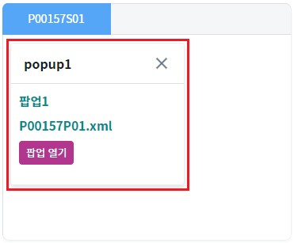
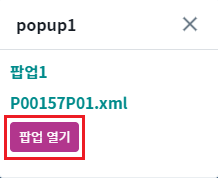
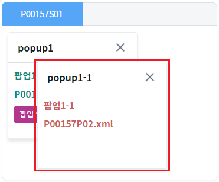
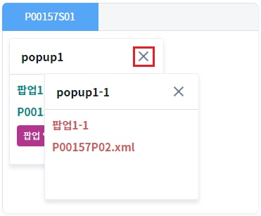
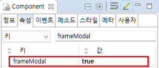

[TabControl] frameModal을 활성화하였을 때의 팝업 동작 비교하기
1개요
TabControl의 'frameModal' 속성의 설정에 따른 팝업 동작을 비교한 예제입니다. 'frameModal' 속성을 'true'로 설정하면 팝업이 탭 콘텐츠 내부에서만 이동할 수 있으며, 팝업에서 팝업을 호출한 경우 상위 팝업을 닫으면 하위 팝업이 함께 닫힙니다.
이 기능은 TabControl의 'frameMode' 속성이 'wframe' 또는 'wframePreload'로 설정된 경우만 동작합니다.
2구현된 기능
(기본 설정) frameModal 비활성화
frameModal 활성화
3예제 테스트 방법
3.1(기본 설정) frameModal 비활성화
예제 영역 '(기본 설정) frameModal 비활성화'에서 테스트합니다.1
STEP 1: 탭 영역에서 팝업을 호출합니다.
TabControl의 탭 'P00157S01'에서 '팝업 열기' 버튼을 클릭합니다.
Image 1.브라우저(Chrome) 실행 예시

2
STEP 2: 실행 결과를 확인합니다.
브라우저의 상단에 팝업 'popup1'이 열린 것을 확인합니다. (디바이스에 따라 아래의 참고 이미지가 다를 수 있습니다.)
Image 2.브라우저(Chrome) 실행 예시 - PC

3
STEP 3: 팝업에서 팝업을 호출합니다.
팝업 'popup1'에서 '팝업 열기' 버튼을 클릭합니다.
Image 3.브라우저(Chrome) 실행 예시 - PC
4
STEP 4: 실행 결과를 확인합니다.
브라우저의 상단에 팝업 'popup1-1'이 열린 것을 확인합니다. (디바이스에 따라 아래의 참고 이미지가 다를 수 있습니다.)
Image 4.브라우저(Chrome) 실행 예시 - PC

5
STEP 5: 상위 팝업에서 닫기 버튼을 클릭합니다.
팝업 'popup1'에서 닫기 버튼을 클릭합니다. (디바이스에 따라 아래의 참고 이미지가 다를 수 있습니다.)
Image 5.브라우저(Chrome) 실행 예시 - PC

6
STEP 6: 실행 결과를 확인합니다.
팝업 'popup1'은 닫히고 팝업 'popup1-1'은 열려 있음을 확인합니다. (디바이스에 따라 아래의 참고 이미지가 다를 수 있습니다.)
Image 6.브라우저(Chrome) 실행 예시 - PC

3.2frameModal 활성화
예제 영역 'frameModal 활성화'에서 테스트합니다.1
STEP 1: 탭 영역에서 팝업을 호출합니다.
TabControl의 탭 'P00157S01'에서 '팝업 열기' 버튼을 클릭합니다.
Image 7.브라우저(Chrome) 실행 예시

2
STEP 2: 실행 결과를 확인합니다.
탭 영역에 팝업 'popup1'이 열린 것을 확인합니다.
Image 8.브라우저(Chrome) 실행 예시 - PC

3
STEP 3: 팝업에서 팝업을 호출합니다.
팝업 'popup1'에서 '팝업 열기' 버튼을 클릭합니다.
Image 9.브라우저(Chrome) 실행 예시 - PC

4
STEP 4: 실행 결과를 확인합니다.
탭 영역에 팝업 'popup1-1'이 열린 것을 확인합니다.
Image 10.브라우저(Chrome) 실행 예시 - PC

5
STEP 5: 상위 팝업에서 닫기 버튼을 클릭합니다.
팝업 'popup1'에서 닫기 버튼을 클릭합니다.
Image 11.브라우저(Chrome) 실행 예시 - PC

6
STEP 6: 실행 결과를 확인합니다.
팝업 'popup1'과 팝업 'popup1-1'이 닫힌 것을 확인합니다.
Image 12.브라우저(Chrome) 실행 예시 - PC
4구현 예시
4.1frameModal 활성화
1
STEP 1: 속성을 정의합니다.
[필수] frameModal="true"
[default: false, true] popup open시 WFrame 안쪽에 팝업을 띄우고 modal을 표시할지 여부.
Image 13.웹스퀘어 스튜디오의 Component View - 속성 설정 예시

Example 1.Source
<!-- tabControl 소스 본문 예시 --> <w2:tabControl frameModal="true" id="tac_exam2"> </w2:tabControl>
2
STEP 2: 탭 추가 스크립트를 작성합니다.
Example 2.Script
//예제 파일의 경우 scwin.initPage에 작성되어 있습니다. //탭 옵션 var jsnTabOpt = { "label" : "P00157S01", "openAction" : "select" }; //탭 콘텐츠 옵션 var jsnContOpt = { "src" : "/page/P00157S01.xml", "wframe" : true //필수 }; //TabControl [tac_exam2]에 탭 추가하기 tac_exam2.addTab( "P00157S01" , jsnTabOpt , jsnContOpt );
5주요 API
frameModal
addTab( id , tabOpt , contOpt )